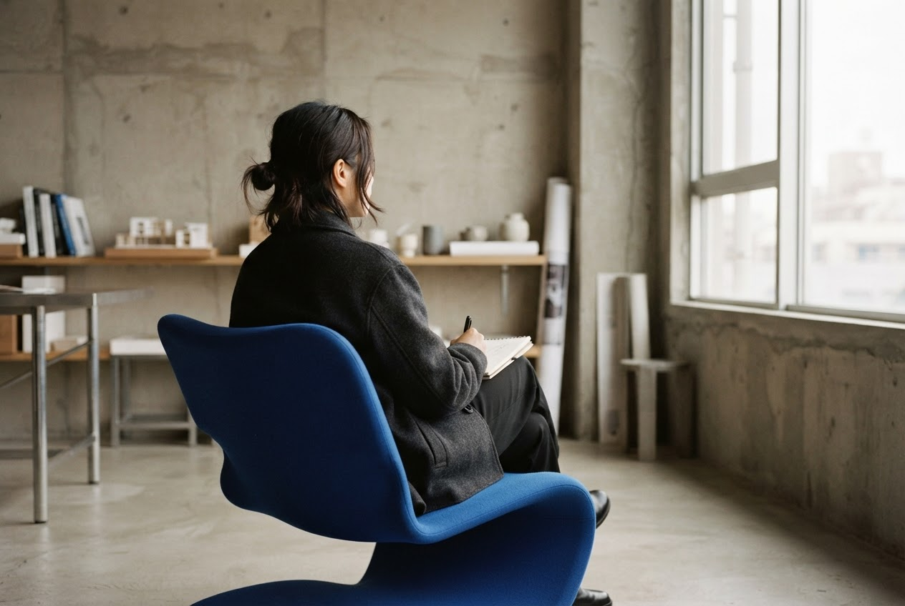
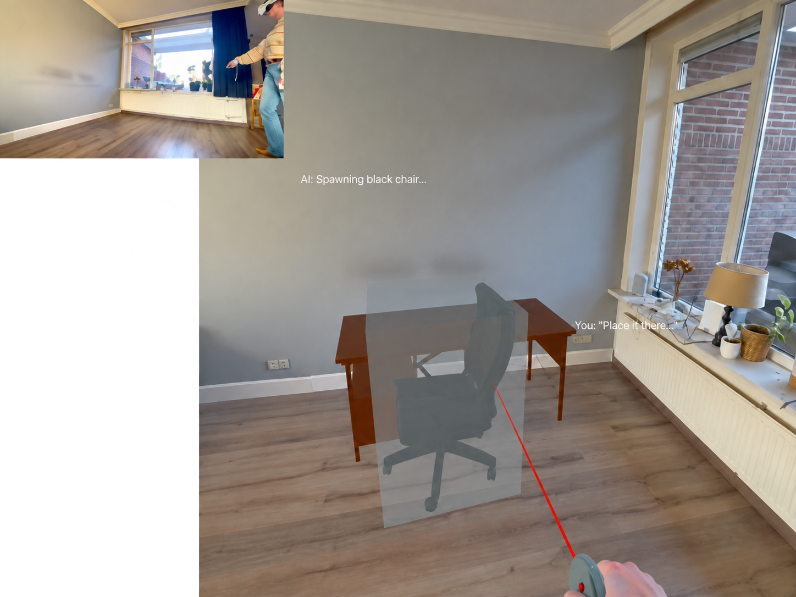
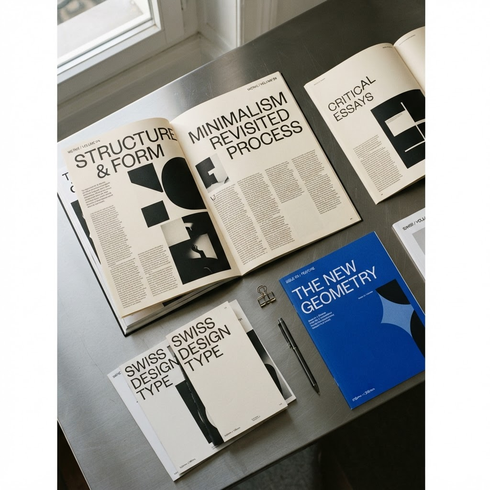
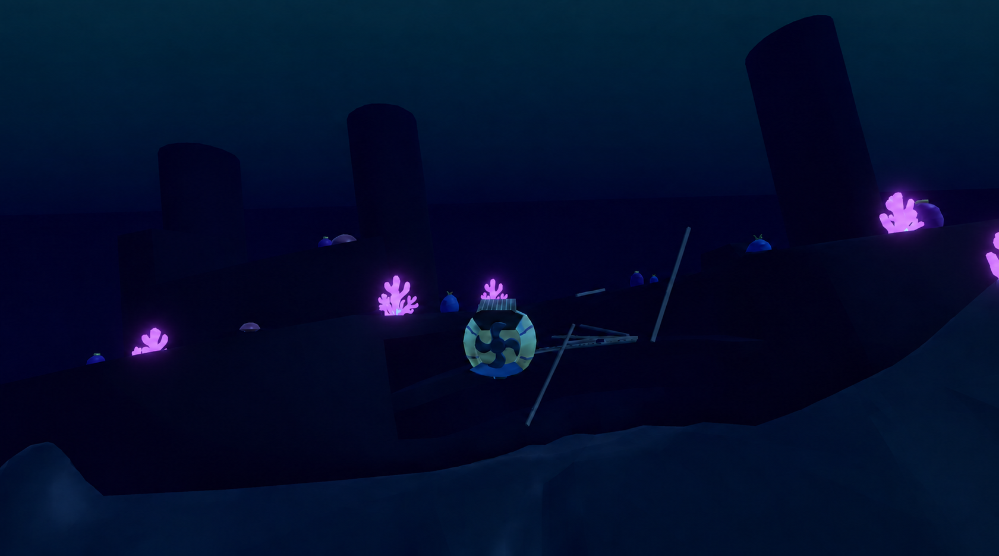
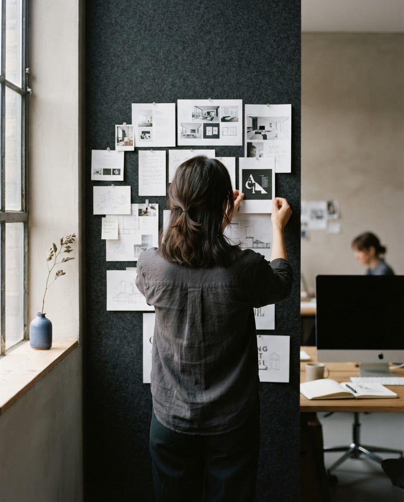

2026 – 2028
MSc Human-Computer Interaction
Utrecht University
Human-centred design and evaluation of interactive systems, with interests in human-AI interaction, adaptive systems, XR, and emerging forms of interaction.
Creative Technology GraduateUnity • C# • BlenderXR, Interactive Media & Game Development from AMSTERDAM
Selected work
Portrait placeholder02 Selected work
A modular selection of my bachelor projects and thesis.
Built and evaluated a Meta Quest 3 prototype combining LLM-interpreted natural-language commands with spatial pointing to create and position virtual objects in XR.
View project
Prototype
embodied and
conversational
authoring in XR
environments
Selected outcome
8.5/10 Thesis · Bachelor of Science

02 / 03Working on something but no pictures yet
View project
Project:Underwater 03 / 03An underwater exploration and puzzle game built in Unity.
View projectMore selected work lives in the project archive.
Explore all projects03 Profile

I'm a Creative Technology graduate from the University of Twente, currently pursuing a Master's in Human-Computer Interaction at Utrecht University. I'm interested in how emerging technologies can create new ways for people to interact with digital environments.
My work combines design, development, and experimentation. I enjoy turning ideas into working prototypes, exploring new interaction techniques, and understanding how people experience the systems I build — particularly in XR, games, and human-AI interaction.
Core capabilities
04 Experience
2026 – 2028
Utrecht University
Human-centred design and evaluation of interactive systems, with interests in human-AI interaction, adaptive systems, XR, and emerging forms of interaction.
2022 – 2026
University of Twente
Focused on interactive media and game development, combining design and technology through projects in XR, game development, 3D environments, data-driven systems, and prototyping.
2021 – 2022
University of Twente
Coursework in algorithms, discrete mathematics, and theoretical computer science as preparation for Game and Media Technology.
-
-
Open for new opportunities
Based in Utrecht · Ready to work anywhere
Feel free to reach out!
veen.kaya@gmail.com